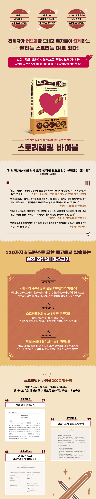

교보문고(敎保文庫, Kyobo Book Centre)는 파주출판도시에 본사를,
서울특별시 종로구 종로 교보생명빌딩에 본점을 둔 대한민국의 출판사 및 서점이다.
교보생명그룹 계열이며 1980년 12월 24일에 교보문고를 설립하였다.
본점은 서울특별시 중구 종로 1에 있는 광화문점이다.
2019년 1월 기준으로 한국에 42개의 매장과 인터넷 서점인 인터넷 교보문고를 운영하고 있다.
2000년에 서울 강남구 삼성동 코엑스몰에
서울문고의 반디앤루니스 코엑스점이 문을 열면서 교보문고를 제치고
국내 최대 규모 서점이 되었으나,
2003년 서초구 서초4동 교보타워사거리(신논현역)에 강남점을 열면서
다시 교보문고는 대한민국에서 가장 큰 규모의 서점이 되었다.
2009년 5월 26일부터는 인터넷으로 주문을 하고,
1시간 후 매장을 직접 방문해 물건을 수령할 수 있는 '바로드림' 서비스를 시작했다.
바로가기 아이콘 서비스인 바로콘 서비스로 접속하면
주문 때 추가로 포인트가 적립된다.
2010년 2월 27일에는 키자니아 서울 내에 '서점' 체험관을 개장하였다.
2015년 11월 17일에는 교보문고 광화문점에 5만년 된 대형 카우리소나무로
제작한 독서 테이블을 설치했다.
이 테이블은 동시에 약 100여명의 시민들이 함께 사용할 만큼의 크기를 가진다.
해외주문/바로드림/제휴사주문/업체배송건의 경우 1+1 증정상품이 발송되지 않습니다.
“잘 나가는 이야기에는 남다른 스토리텔링이 있다!”
구매하신 책에 Klover 리뷰를 남겨주시면 소정의 포인트를 적립해 드립니다.
테스 형 말고 레스 형~
작가라면 알아야 할 전통적인 글쓰기 원칙들을 제시한 사람, 바로 아리스토텔레스!
<스토리텔링 바이블>은 아리스텔레스의 글쓰기 원칙들을 주재료로 하여
대니얼 조슈아 루빈의 레시피로 탄생한 이야기 창작 완벽 가이드북이에요.
여기에 아드레날린 한 스푼을 추가했대요.
책표지 그림처럼 심장을 콕 찌르는,
강렬한 감정을 일으키는 이야기를 쓰고 싶다면
이 책 한 권으로 충분하다고, 저자는 이야기하고 있어요.
어떻게 확신하냐고요? 저자는 예일대학교 드라마 전문 대학원을
우등으로 졸업하고 극작 전공으로 석사 학위를 받았다고 해요.
25년 이상 작가로 살면서 정말로 끝내는 작품들을 썼고, 큰 실수도 저질렀는데 그 과정에서 무엇이 중요하고, 무엇이 중요하지 않은지 배웠대요. 그 값진 노하우를 이 책속에 글쓰기의 27가지 원칙들로 정리했으니 독자들은 그 원칙들을 자기 것으로 만들면 돼요.
앞서 아리스토텔레스의 전통적인 글쓰기 원칙들을 저자가
언급했듯이 기본 원칙은 변하지 않아요.
저자는 이 책의 방법론을 무술에서 영감을 받았다면서
두 가지를 강조하고 있어요.